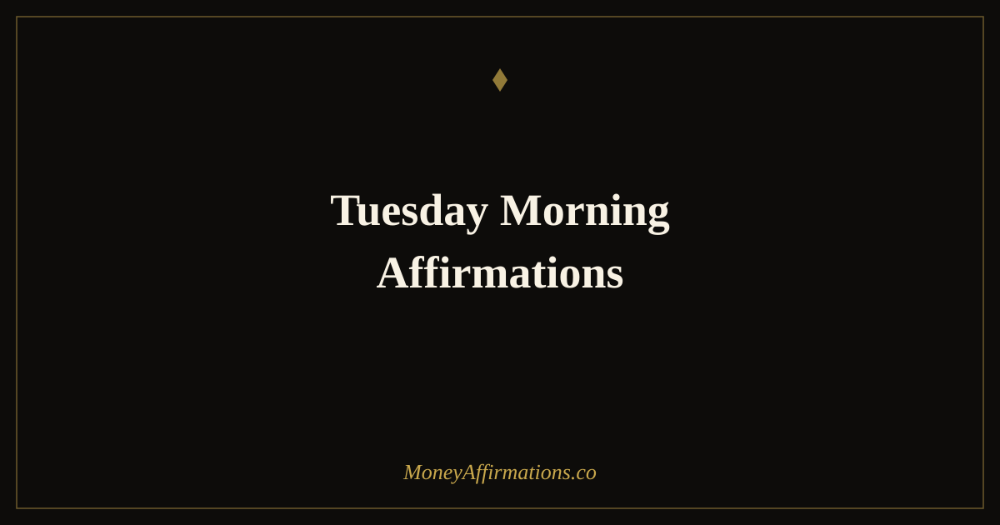

Tuesday Morning Affirmations: 30 Statements for a Powerful Week

Tuesday is a day with a particular energy. Monday's fresh-start momentum is still in play, but the week's real demands have now arrived — the meetings, the decisions, the financial actions that actually build toward something. Tuesday morning is when the week's direction often becomes fixed: it either continues with focus and intention, or it begins to drift into reaction. These affirmations are designed to fix it firmly in the first direction.
These 30 Tuesday morning affirmations are built around the themes most relevant to the middle of a working week: momentum, focus, financial confidence, the willingness to take action on what matters, and the steady accumulation of progress that wealth-building requires. Spoken with intention before the day begins, they establish the mindset that turns a good week into a great one.
What are Tuesday morning affirmations?
Tuesday morning affirmations are present-tense statements specifically oriented toward building and sustaining the momentum, focus, and financial confidence needed for a productive second day of the working week. They acknowledge Tuesday's position in the week — past the fresh start of Monday, with real work ahead — and address the psychological states most useful for that moment: drive, clarity, belief in the value of consistent effort, and the conviction that the week's financial goals are achievable.
Day-specific affirmations are a natural extension of a daily practice, giving each morning its own intentional framing. The broader daily foundation is built through the prosperity affirmations collection, which provides the complete set of statements for every day and every financial goal.
30 Tuesday morning affirmations
- This Tuesday I bring full focus, clear intention, and strong financial energy to everything I do.
- I carry the momentum of Monday into today and I build on it with every action I take.
- Tuesday is a powerful day for me — I make progress, earn well, and move my goals forward.
- I am focused, driven, and completely committed to the financial goals I am building this week.
- This morning I choose to be productive, purposeful, and financially intentional in all I do today.
- I am grateful for this Tuesday — for the work it brings, the income it creates, and the progress it represents.
- I show up today with the confidence of someone who knows their value and acts on it consistently.
- My financial goals for this week are clear and today I take the actions that make them real.
- Tuesday brings new opportunities and I am alert, ready, and fully positioned to receive them.
- I am building wealth steadily, one excellent Tuesday at a time.
- This is a day of action — I do the work, make the calls, send the invoices, and advance my financial life.
- I wake this Tuesday with energy, clarity, and a deep belief in the progress I am making.
- My Tuesday is productive because I begin it with intention and I sustain it with focus.
- I am a person who gets things done — Tuesday is proof of that, and today I prove it again.
- The work I do today compounds into the financial life I am deliberately building.
- I bring my best to this Tuesday and this Tuesday brings its best back to me.
- I am earning well, working smartly, and building consistently — today is no different.
- This Tuesday I make at least one decision that advances my financial future in a meaningful way.
- I am grateful for the ability to work, to create value, and to be compensated generously for it.
- Tuesday's energy is one of momentum — and I ride it all the way to the goals I have set.
- I release any residual tiredness or hesitation and step into this day with full financial confidence.
- My income grows because I show up fully every single day — including this one, especially this one.
- I am focused on what matters most financially and I protect that focus throughout this entire day.
- This Tuesday I am decisive, productive, and moving steadily toward everything I want to create.
- I make excellent use of every hour today because my time is one of my most valuable financial assets.
- The effort I put in this Tuesday compounds quietly into something extraordinary over time.
- I am building the week's financial results, action by action, and today's actions matter.
- This morning I choose confidence over doubt, action over hesitation, and abundance over scarcity.
- My Tuesday is shaped by my intention — and my intention today is focus, prosperity, and progress.
- I end this Tuesday closer to my financial goals than I started it, and I am grateful for every step.
How to use these affirmations
Tuesday morning affirmations work best as part of a structured five-minute practice before the working day begins. Sit quietly, choose three affirmations from this list, and speak each one aloud with your full attention. Follow this with one specific financial intention for the day: a task, a conversation, or a decision that directly advances your financial goals. The affirmation sets the identity; the intention provides direction; and together they create the psychological state in which Tuesday becomes one of your most productive financial days.
If you already have a daily affirmation practice, layer Tuesday-specific affirmations on top of it: your standard three, plus one or two that are specifically oriented toward Tuesday's midweek position. Over time, your mind will associate Tuesday mornings with a particular quality of focus and momentum — which is precisely the kind of conditioned state that consistent practice is designed to build.
How weekly intention-setting shapes financial outcomes
Research into weekly productivity patterns consistently identifies a phenomenon sometimes called the "Tuesday effect" — a measurable spike in deliberate, high-output work on Tuesdays, particularly in people who begin their working week with clear structured intention rather than reactive schedules. The mechanism is implementation intention: when you decide in advance how you will think and act in a given situation, you are dramatically more likely to follow through than when you rely on in-the-moment motivation.
Morning affirmations function as implementation intentions for your financial identity and behaviour. They prime the specific responses — confidence in negotiations, clarity about financial priorities, willingness to take decisive action — that produce good financial outcomes. The Tuesday morning window is particularly valuable because it is early enough in the week for those primed responses to influence several remaining days of work and decision-making. The financial compound effect of five disciplined, intentionally-begun Tuesdays per month, across a year, is substantial.
Tips to make them work faster
- Set a Tuesday-specific alarm five minutes earlier. The practice only works if it happens before the day begins. A dedicated alarm removes reliance on willpower and ensures the window is protected.
- Choose one financial action for Tuesday each week. One specific, meaningful action — not a vague intention. "I will send the proposal this morning" or "I will transfer to savings before noon." The affirmation fires the intention; the specific action makes it real.
- Speak them standing up. Physical posture influences psychological state. Standing while saying Tuesday morning affirmations adds an energy and conviction that sitting does not always provide.
- Review Monday's financial wins before you begin. Starting Tuesday with a brief reflection on what went well Monday amplifies the momentum that Tuesday affirmations are designed to sustain.
- Track your Tuesday outputs for one month. Note what you accomplished financially on each Tuesday. The pattern of intentional Tuesdays versus unintentional ones will be immediately visible and motivating.
Frequently Asked Questions
Why do Tuesday mornings benefit from specific affirmations?
Tuesday occupies a psychologically interesting position in the working week. The Monday reset energy has either held or faded, and the remaining days still require focus and drive. Research on weekly productivity patterns consistently shows that Tuesday is among the highest-output days of the week — but only for those who actively maintain their motivation and intention. Tuesday morning affirmations work by consciously reinforcing the drive, clarity, and financial focus needed to make the second day of the week as intentional as the first.
Should I use different affirmations each day of the week?
Using day-specific affirmations has a genuine advantage: it keeps the practice fresh and gives each morning its own intentional framing. Tuesday affirmations can be more momentum-oriented, Thursday ones can emphasise completion and finishing strong, Friday ones can reflect on the week's achievements. That said, the most important factor is consistency — using any affirmations daily produces far better results than using the perfect day-specific set inconsistently. Build the daily habit first, then add the day-specific flavour.
How do morning affirmations improve financial performance throughout the day?
Morning affirmations set what psychologists call an 'implementation intention' — a pre-committed mental orientation that influences how you respond to situations throughout the day. When you begin Tuesday morning with clear statements about your value, your capability, and your financial goals, you create a psychological filter through which you interpret the day's events. Opportunities look more visible, negotiations feel more approachable, and financial decisions are made from a more grounded and confident state. This effect is not imagination — it is the predictable result of how pre-commitment shapes behaviour.
Every Tuesday is an opportunity to build the week's financial momentum. For the complete daily practice that supports every morning of the week, explore the full prosperity affirmations collection and make intentional mornings your most consistent financial habit.